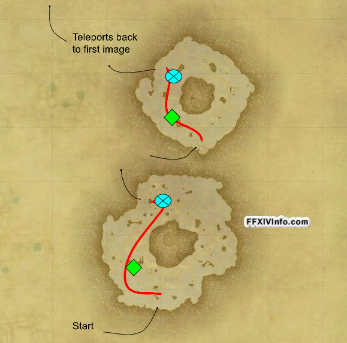

Table of Contents
Getting Started
Before getting started this guide is to help you get an idea how to tank and to get over any possible tank anxiety.
This guide will only cover ARR as after finishing ARR you will have an idea of how to pull etc!
They Key
Sastasha
The Tam-Tara Deepcroft
The Copperbell Mines
Halatalii
Haukke Manor
Brayflox's Longstopp
The Sunken Temple of Qarn

Cutter's Cry

The Stone Vigil

Castrum Merdianum